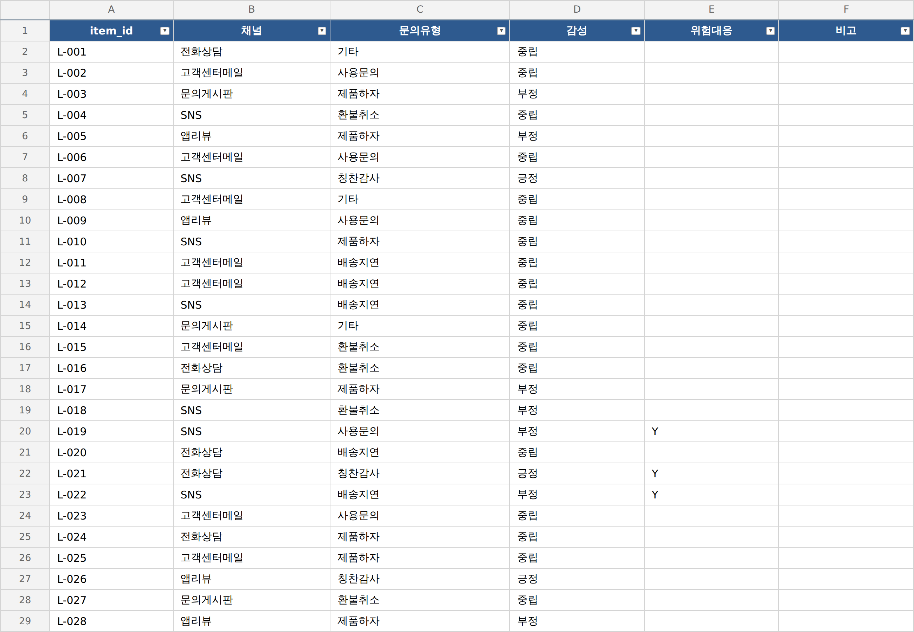

// 실습 5 · 고객 문의에 딱지 붙이기
2 · 520건 일괄 분류¶
1단계에서 한 건이 기준대로 분류됐습니다. 기준이 통한다는 걸 확인했으니 이제 520건 전체를 같은 규칙으로 분류해 빈 표를 채웁니다.
사람이 한 건에 10초씩만 잡아도 520건이면 대략 한 시간 반이지만 AI는 몇 분이면 끝냅니다. 양이 늘어날수록 이 차이는 더 벌어집니다. 다만 조건이 있습니다. AI는 규칙을 준 만큼만 정확합니다. 아래 체크리스트가 그 규칙의 재료입니다.
직접 시켜보세요¶
아래 두 체크리스트를 먼저 읽고 빠진 규칙이 없도록 프롬프트에 담아보세요.
프롬프트에 꼭 담을 것 ✅¶
- 분류 대상 — VOC 원문 520건 전부,
item_id순서 그대로 (순서가 흐트러지면 원문 대조가 안 됩니다) - 판정 순서 — 유형 → 감성 → 위험 스캔, 세 축 독립으로 (한 축이 다른 축을 끌고 가면 안 됨)
- 복합·경계 규칙 — 하자 언급해도 환불 요구면 환불취소, 부정+긍정 섞이면 본 사안 기준 (경계 규칙이 없으면 사람마다 답이 갈리는 지점)
- 빈칸 금지 — 모든 줄의 세 칸을 채우고, 확신 없으면 기타·중립 +
검토필요표시 - 결과 파일 — 채운 표, 파일명 지정 (예:
분류표.xlsx)
이런 건 빼세요 ❌¶
- 앞 몇 건만 하고 나머지는 알아서 채우게 두기 (전량 분류해야 함)
- 애매한 줄을 흔한 유형으로 몰기 (드문 칭찬감사·기타가 사라집니다)
- 판단이 어려운 줄을 빈칸으로 남기기 (기타·중립 + 검토필요로)
예시 프롬프트¶
여러분 문장을 먼저 보낸 뒤에 열어보세요.
이렇게 시킬 수 있습니다
VOC_분류기준.pdf 기준 그대로 VOC원문.xlsx의 520건을 전부 분류해서 분류표.xlsx를 채워줘.
item_id 순서대로, 각 줄에 문의유형·감성·위험대응 세 칸을 채워.
판정 순서는 유형 → 감성 → 위험 스캔이고, 세 축은 독립으로 판단해.
복합 문의는 기준의 우선순위 규칙을 따르고(하자 언급해도 환불 요구면 환불취소 등),
확신이 없는 건은 억지로 분류하지 말고 기타·중립으로 둔 뒤 비고에 '검토필요'라고 적어줘.
빈칸 없이 520줄을 다 채우고, 다 되면 유형별·감성별 건수와 위험대응 Y 건수를 알려줘.
실행 예시¶
이렇게 나오면 됩니다

체크포인트¶
- 표가 520행 모두 채워졌다 (빈칸 없음)
- 유형·감성 값이 전부 보기 안(6종·3종)에 있다
- 위험대응이
Y또는 빈칸으로만 되어 있고, 감성과 따로 붙었다 - 확신 없는 줄은
검토필요로 표시돼 있다 (빈칸이 아님)